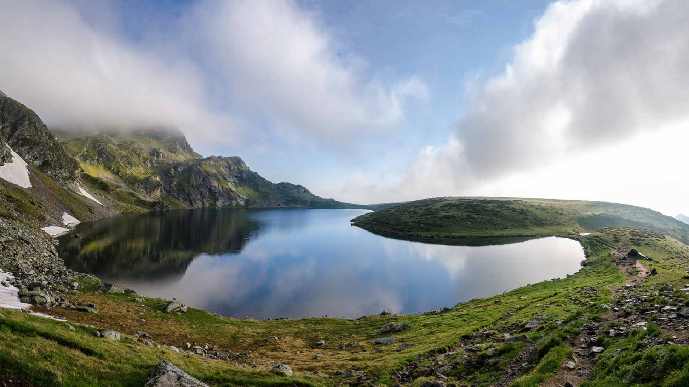

Bulgaria is a country located in Southeastern Europe on the Balkan Peninsula. It shares borders with Romania to the north, Serbia and North Macedonia to the west, Greece and Turkey to the south, and the Black Sea to the east. Because of its central position between Europe and Asia, Bulgaria has long been influenced by many different cultures and civilizations. These influences can still be seen today in the country’s architecture, traditions, food, and historical landmarks. As a result, Bulgaria offers visitors a unique combination of cultural heritage, natural landscapes, and modern attractions.
The country has a history that spans thousands of years. Ancient Thracian tribes were among the earliest inhabitants of the region, leaving behind tombs, artifacts, and ruins that continue to fascinate historians and tourists. Later, Bulgaria became part of the Roman and Byzantine Empires before developing into a powerful medieval kingdom. Over the centuries, the region also experienced Ottoman rule before eventually gaining independence and becoming the modern nation it is today. Many of these historical periods have left visible traces, which visitors can explore in cities, archaeological sites, monasteries, and fortresses throughout the country.
Bulgaria’s capital city, Sofia, is one of the oldest cities in Europe and serves as the country’s political, economic, and cultural center. The city features a blend of modern buildings, historic churches, museums, and lively public spaces. Visitors who want to learn more about Sofia’s landmarks and attractions can explore the dedicated page about the capital city. Another important destination is Plovdiv, one of the oldest continuously inhabited cities in the world. Its historic old town, Roman theater, and artistic districts make it a popular place for travelers interested in culture and history.
Beyond its cities, Bulgaria is also famous for its diverse natural landscapes. The country contains several mountain ranges such as the Rila, Pirin, and Balkan Mountains. These areas provide opportunities for hiking, sightseeing, and winter sports. Bulgaria’s national parks and protected areas are home to unique wildlife, forests, and scenic lakes. Visitors interested in nature tourism can explore the sections of this website that focus on mountains, national parks, and adventure tourism.
Another major attraction is the Bulgarian Black Sea coast. Stretching along the eastern border of the country, the coastline is known for its sandy beaches, clear waters, and vibrant resort towns. Some destinations are popular for summer vacations and entertainment, while others are known for their historic charm and cultural significance. The page dedicated to travel and destinations explores many of these coastal and inland locations in more detail.
Bulgarian culture is also an important part of the country’s identity. Traditional music, dance, costumes, and festivals reflect centuries of cultural development and regional diversity. Events such as the Kukeri Festival and the Rose Festival highlight local traditions and attract visitors from around the world. Travelers interested in these cultural practices can learn more by visiting the pages about culture and traditions as well as festivals and celebrations.
Food is another essential part of the Bulgarian experience. Bulgarian cuisine is known for its use of fresh vegetables, dairy products, herbs, and grilled meats. Popular dishes such as banitsa, shopska salad, and kebapche are widely enjoyed across the country. Bulgarian yogurt is also famous internationally for its distinctive taste and health benefits. The page dedicated to food and cuisine provides a closer look at traditional dishes and culinary customs.
Overall, Bulgaria is a country that offers a wide variety of experiences for visitors. From historic cities and ancient monuments to mountain landscapes and coastal resorts, there is something for everyone to discover. The different sections of this website provide detailed information about Bulgaria’s destinations, culture, history, and travel opportunities. By exploring these pages, visitors can gain a deeper understanding of the country and plan their journey through one of Europe’s most interesting and diverse travel destinations.